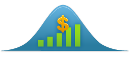

OptionMatrix PDF manual
5 Models supported
The OptionMatrix programs support the following models:
5.1 BSM
5.2 American Options
- American Barone-Adesi Whaley
- Black-Scholes American
- American Perpetual
- American Put Approx Johnson
- American Put Approx Geske-Johnson
- Barone-Adesi Whaley
- Bjerksund Stensland
5.3 Single Asset Options
5.4 Two Asset Options
5.5 Jump Diffusion
5.6 Trees & Finite Differences
5.7 Monte Carlo
- Simulate European Option
- Simulate European Generic Option
- Simulate European Option Generic with Control Variate
- Simulate European Option Generic with Antihetic Variate
- Simulate Price Path
- Simulate Price Path Control Variate
- MC (Crude)
- QMC (Sobol)
- MC (Longstaff Schwartz)
5.8 Discrete Dividend
- Roll-Geske-Whaley
- Black-Scholes Dividends
- American Proport Dividends Binomial
- Black-Scholes Coupon Bond
5.9 Currency
- Quanto
- Garman-KohlHagen
- Foreign Equity Option Struck in Domestic Currency
- Equity Linked Foreign Exchange Option
- Takeover Foreign Exchange Option
- Currency American Binomial
- Currency European
5.10 Futures
5.11 Interest Rate Derivatives
5.12 Asian
5.13 Implied Volatility
- Bisection
- Newton Raphson
- Barone-Adesi Whaley Bisection
- Black-Scholes Bisection
- Implied Volatility Black-Scholes Newton
- Implied Bisections
5.14 Bonds
- Vasicek Bond Price
- Vasicek Bond Option
- Convertible Bond
- Bond Zero Black
- Bond Zero Vasicek
- Bond American Binomial
- Bond Call Rendleman Bartter
- Bond Flat
- Bond with Term Structure
- Bond with Principal
5.15 Term structures
- Term Structure Flat
- Term Structure Cir
- Term Structure Vasicek
- Term Structure Nelson Siegel
- Term Structure Svensson
- Term Structure Cubic Spline
- Term Structure Interpolated
5.16 Misc
- PV / IRR
- Log Normal Random
5.17 pre-BSM


OptionMatrix
© 2013 Anthony Bradford
OptionMatrix PDF manual